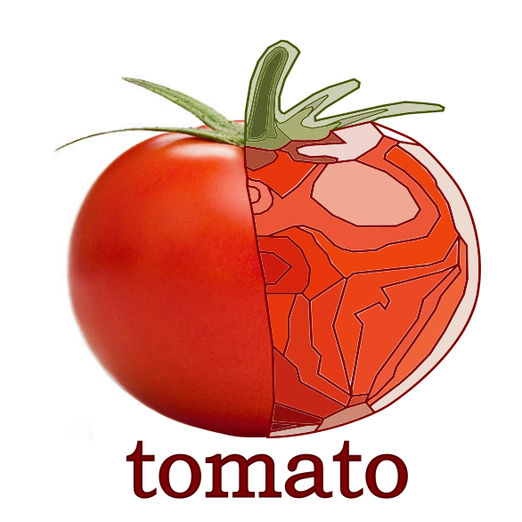

tomato 
master
tomato user manual
Installation
Quick start guide
Usage
Version history
tomato driver library
dummy
: A dummy driver module
biologic
: Driver for BioLogic potentiostats
tomato autodocs
tomato package
tomato
Index
Index
A
|
B
|
C
|
D
|
E
|
F
|
G
|
H
|
I
|
J
|
K
|
L
|
M
|
N
|
O
|
P
|
R
|
S
|
T
|
U
|
V
|
W
|
X
|
Z
A
ACK_TIMEOUT (tomato.drivers.biologic.kbio.kbio_types.FIND_ERROR attribute)
action_queued_jobs() (in module tomato.daemon.job)
address (tomato.drivers.biologic.kbio.kbio_types.USB_device property)
(tomato.models.Device attribute)
AmpCode (tomato.drivers.biologic.kbio.kbio_types.ChannelInfo attribute)
AMPL3_200A12V (tomato.drivers.biologic.kbio.kbio_types.AMPLIFIER attribute)
AMPL3_50A60V (tomato.drivers.biologic.kbio.kbio_types.AMPLIFIER attribute)
AMPL3_50A60VII (tomato.drivers.biologic.kbio.kbio_types.AMPLIFIER attribute)
AMPL4_10A5V (tomato.drivers.biologic.kbio.kbio_types.AMPLIFIER attribute)
AMPL4_1A48VPII (tomato.drivers.biologic.kbio.kbio_types.AMPLIFIER attribute)
AMPL4_1A48VPIII (tomato.drivers.biologic.kbio.kbio_types.AMPLIFIER attribute)
AMPL4_2A30V (tomato.drivers.biologic.kbio.kbio_types.AMPLIFIER attribute)
AMPL4_30A50V (tomato.drivers.biologic.kbio.kbio_types.AMPLIFIER attribute)
AMPL_100A5V (tomato.drivers.biologic.kbio.kbio_types.AMPLIFIER attribute)
AMPL_10A (tomato.drivers.biologic.kbio.kbio_types.AMPLIFIER attribute)
AMPL_10A_MPG2B (tomato.drivers.biologic.kbio.kbio_types.AMPLIFIER attribute)
AMPL_1A (tomato.drivers.biologic.kbio.kbio_types.AMPLIFIER attribute)
AMPL_1A48V (tomato.drivers.biologic.kbio.kbio_types.AMPLIFIER attribute)
AMPL_20A (tomato.drivers.biologic.kbio.kbio_types.AMPLIFIER attribute)
AMPL_20A_MPG2B (tomato.drivers.biologic.kbio.kbio_types.AMPLIFIER attribute)
AMPL_2A (tomato.drivers.biologic.kbio.kbio_types.AMPLIFIER attribute)
AMPL_40A_MPG2B (tomato.drivers.biologic.kbio.kbio_types.AMPLIFIER attribute)
AMPL_4A14V (tomato.drivers.biologic.kbio.kbio_types.AMPLIFIER attribute)
AMPL_4AI (tomato.drivers.biologic.kbio.kbio_types.AMPLIFIER attribute)
AMPL_4AI_VSP (tomato.drivers.biologic.kbio.kbio_types.AMPLIFIER attribute)
AMPL_5A (tomato.drivers.biologic.kbio.kbio_types.AMPLIFIER attribute)
AMPL_5A_MPG2B (tomato.drivers.biologic.kbio.kbio_types.AMPLIFIER attribute)
AMPL_80A (tomato.drivers.biologic.kbio.kbio_types.AMPLIFIER attribute)
AMPL_8AI (tomato.drivers.biologic.kbio.kbio_types.AMPLIFIER attribute)
AMPL_COIN_CELL_HOLDER (tomato.drivers.biologic.kbio.kbio_types.AMPLIFIER attribute)
AMPL_ERROR (tomato.drivers.biologic.kbio.kbio_types.AMPLIFIER attribute)
AMPL_HEUS (tomato.drivers.biologic.kbio.kbio_types.AMPLIFIER attribute)
AMPL_LB2000 (tomato.drivers.biologic.kbio.kbio_types.AMPLIFIER attribute)
AMPL_LB500 (tomato.drivers.biologic.kbio.kbio_types.AMPLIFIER attribute)
AMPL_LC (tomato.drivers.biologic.kbio.kbio_types.AMPLIFIER attribute)
AMPL_LC_VSP (tomato.drivers.biologic.kbio.kbio_types.AMPLIFIER attribute)
AMPL_MUIC (tomato.drivers.biologic.kbio.kbio_types.AMPLIFIER attribute)
AMPL_NONE (tomato.drivers.biologic.kbio.kbio_types.AMPLIFIER attribute)
AMPL_PAC (tomato.drivers.biologic.kbio.kbio_types.AMPLIFIER attribute)
AMPL_UNDEF (tomato.drivers.biologic.kbio.kbio_types.AMPLIFIER attribute)
AMPLIFIER (class in tomato.drivers.biologic.kbio.kbio_types)
amplifier (tomato.drivers.biologic.kbio.kbio_api.KBIO_api.ChannelInfo property)
appdir (tomato.models.Daemon attribute)
B
BANDWIDTH (class in tomato.drivers.biologic.kbio.kbio_types)
BCS815 (tomato.drivers.biologic.kbio.kbio_types.DEVICE attribute)
bind_function() (tomato.drivers.biologic.kbio.kbio_api.KBIO_api method)
BISTAT (tomato.drivers.biologic.kbio.kbio_types.DEVICE attribute)
BISTAT2 (tomato.drivers.biologic.kbio.kbio_types.DEVICE attribute)
blfind_api (tomato.drivers.biologic.kbio.kbio_api.KBIO_api attribute)
board (tomato.drivers.biologic.kbio.kbio_api.KBIO_api.ChannelInfo property)
BoardSerialNumber (tomato.drivers.biologic.kbio.kbio_types.ChannelInfo attribute)
BoardVersion (tomato.drivers.biologic.kbio.kbio_types.ChannelInfo attribute)
BP300 (tomato.drivers.biologic.kbio.kbio_types.DEVICE attribute)
BW_1 (tomato.drivers.biologic.kbio.kbio_types.BANDWIDTH attribute)
BW_2 (tomato.drivers.biologic.kbio.kbio_types.BANDWIDTH attribute)
BW_3 (tomato.drivers.biologic.kbio.kbio_types.BANDWIDTH attribute)
BW_4 (tomato.drivers.biologic.kbio.kbio_types.BANDWIDTH attribute)
BW_5 (tomato.drivers.biologic.kbio.kbio_types.BANDWIDTH attribute)
BW_6 (tomato.drivers.biologic.kbio.kbio_types.BANDWIDTH attribute)
BW_7 (tomato.drivers.biologic.kbio.kbio_types.BANDWIDTH attribute)
BW_8 (tomato.drivers.biologic.kbio.kbio_types.BANDWIDTH attribute)
BW_9 (tomato.drivers.biologic.kbio.kbio_types.BANDWIDTH attribute)
C
C340_IF0 (tomato.drivers.biologic.kbio.kbio_types.CHANNEL_BOARD attribute)
C340_IF2_NONZ (tomato.drivers.biologic.kbio.kbio_types.CHANNEL_BOARD attribute)
C340_IF2_Z (tomato.drivers.biologic.kbio.kbio_types.CHANNEL_BOARD attribute)
C340_IF3_NONZ (tomato.drivers.biologic.kbio.kbio_types.CHANNEL_BOARD attribute)
C340_IF3_NZZ (tomato.drivers.biologic.kbio.kbio_types.CHANNEL_BOARD attribute)
C340_IF3_Z (tomato.drivers.biologic.kbio.kbio_types.CHANNEL_BOARD attribute)
C340_IF3_ZZ (tomato.drivers.biologic.kbio.kbio_types.CHANNEL_BOARD attribute)
C340_OTHERS (tomato.drivers.biologic.kbio.kbio_types.CHANNEL_BOARD attribute)
C340_SP150NZ (tomato.drivers.biologic.kbio.kbio_types.CHANNEL_BOARD attribute)
C340_SP150Z (tomato.drivers.biologic.kbio.kbio_types.CHANNEL_BOARD attribute)
C340_SP50 (tomato.drivers.biologic.kbio.kbio_types.CHANNEL_BOARD attribute)
C437_MPG2 (tomato.drivers.biologic.kbio.kbio_types.CHANNEL_BOARD attribute)
C437_MPG2Z (tomato.drivers.biologic.kbio.kbio_types.CHANNEL_BOARD attribute)
C437_MPGX (tomato.drivers.biologic.kbio.kbio_types.CHANNEL_BOARD attribute)
C437_MPGXZ (tomato.drivers.biologic.kbio.kbio_types.CHANNEL_BOARD attribute)
C437_NZ (tomato.drivers.biologic.kbio.kbio_types.CHANNEL_BOARD attribute)
C437_SP150NZ (tomato.drivers.biologic.kbio.kbio_types.CHANNEL_BOARD attribute)
C437_SP150Z (tomato.drivers.biologic.kbio.kbio_types.CHANNEL_BOARD attribute)
C437_VMP3ENZ (tomato.drivers.biologic.kbio.kbio_types.CHANNEL_BOARD attribute)
C437_VMP3EZ (tomato.drivers.biologic.kbio.kbio_types.CHANNEL_BOARD attribute)
C437_Z (tomato.drivers.biologic.kbio.kbio_types.CHANNEL_BOARD attribute)
c_buffer (class in tomato.drivers.biologic.kbio.c_utils)
c_dump() (in module tomato.drivers.biologic.kbio.c_utils)
CA (tomato.drivers.biologic.kbio.tech_types.TECH_ID attribute)
CALIMIT (tomato.drivers.biologic.kbio.tech_types.TECH_ID attribute)
cancel() (in module tomato.ketchup)
capabilities (tomato.models.Device attribute)
CASG (tomato.drivers.biologic.kbio.tech_types.TECH_ID attribute)
CASP (tomato.drivers.biologic.kbio.tech_types.TECH_ID attribute)
CE_TO_GND (tomato.drivers.biologic.kbio.kbio_types.HW_CNX attribute)
CFG_MODIFY_FAILED (tomato.drivers.biologic.kbio.kbio_types.FIND_ERROR attribute)
CGA (tomato.drivers.biologic.kbio.tech_types.TECH_ID attribute)
CH_INFO (in module tomato.drivers.biologic.kbio.kbio_types)
Channel (tomato.drivers.biologic.kbio.kbio_types.ChannelInfo attribute)
channel (tomato.models.Pipeline.Component attribute)
CHANNEL_BOARD (class in tomato.drivers.biologic.kbio.kbio_types)
channel_map() (tomato.drivers.biologic.kbio.kbio_api.KBIO_api static method)
ChannelInfo (class in tomato.drivers.biologic.kbio.kbio_types)
channels (tomato.models.Device attribute)
ChannelsArray (in module tomato.drivers.biologic.kbio.kbio_types)
check() (tomato.drivers.biologic.kbio.kbio_api.KBIO_api.Error method)
check_queued_jobs() (in module tomato.daemon.job)
class_name() (in module tomato.drivers.biologic.kbio.utils)
CLB2000 (tomato.drivers.biologic.kbio.kbio_types.DEVICE attribute)
CLB500 (tomato.drivers.biologic.kbio.kbio_types.DEVICE attribute)
CLOAD (tomato.drivers.biologic.kbio.tech_types.TECH_ID attribute)
CMD_FAILED (tomato.drivers.biologic.kbio.kbio_types.FIND_ERROR attribute)
COKINE (tomato.drivers.biologic.kbio.tech_types.TECH_ID attribute)
COMM_ALLOCMEMFAILED (tomato.drivers.biologic.kbio.kbio_types.ERROR attribute)
COMM_COMMFAILED (tomato.drivers.biologic.kbio.kbio_types.ERROR attribute)
COMM_CONNECTIONFAILED (tomato.drivers.biologic.kbio.kbio_types.ERROR attribute)
COMM_INCOMPATIBLESERVER (tomato.drivers.biologic.kbio.kbio_types.ERROR attribute)
COMM_INVALIDIPADDRESS (tomato.drivers.biologic.kbio.kbio_types.ERROR attribute)
COMM_LOADFIRMWAREFAILED (tomato.drivers.biologic.kbio.kbio_types.ERROR attribute)
COMM_MAXCONNREACHED (tomato.drivers.biologic.kbio.kbio_types.ERROR attribute)
COMM_WAITINGACK (tomato.drivers.biologic.kbio.kbio_types.ERROR attribute)
completed_at (tomato.models.Job attribute)
config (tomato.drivers.biologic.kbio.kbio_types.Ethernet_device attribute)
Connect() (tomato.drivers.biologic.kbio.kbio_api.KBIO_api method)
connection (tomato.drivers.biologic.kbio.kbio_api.KBIO_api.HardwareConf property)
Connection (tomato.drivers.biologic.kbio.kbio_types.HardwareConf attribute)
ConvertNumericIntoSingle() (tomato.drivers.biologic.kbio.kbio_api.KBIO_api method)
CP (tomato.drivers.biologic.kbio.tech_types.TECH_ID attribute)
CPLIMIT (tomato.drivers.biologic.kbio.tech_types.TECH_ID attribute)
CPO (tomato.drivers.biologic.kbio.tech_types.TECH_ID attribute)
CPOWER (tomato.drivers.biologic.kbio.tech_types.TECH_ID attribute)
CPP (tomato.drivers.biologic.kbio.tech_types.TECH_ID attribute)
CPU (tomato.drivers.biologic.kbio.kbio_types.DeviceInfo attribute)
current() (in module tomato.drivers.biologic.kbio_wrapper)
CURRENT_VALUES (in module tomato.drivers.biologic.kbio.kbio_types)
CurrentValues (class in tomato.drivers.biologic.kbio.kbio_types)
CV (tomato.drivers.biologic.kbio.tech_types.TECH_ID attribute)
CVA (tomato.drivers.biologic.kbio.tech_types.TECH_ID attribute)
D
data (tomato.models.Reply attribute)
DATA_INFO (in module tomato.drivers.biologic.kbio.kbio_types)
data_poller() (in module tomato.drivers.driver_funcs)
data_snapshot() (in module tomato.drivers.driver_funcs)
DataBuffer (in module tomato.drivers.biologic.kbio.kbio_types)
DataInfo (class in tomato.drivers.biologic.kbio.kbio_types)
DefineBoolParameter() (tomato.drivers.biologic.kbio.kbio_api.KBIO_api method)
DefineIntParameter() (tomato.drivers.biologic.kbio.kbio_api.KBIO_api method)
DefineParameter() (tomato.drivers.biologic.kbio.kbio_api.KBIO_api method)
DefineSglParameter() (tomato.drivers.biologic.kbio.kbio_api.KBIO_api method)
DEVICE (class in tomato.drivers.biologic.kbio.kbio_types)
DEVICE_INFO (in module tomato.drivers.biologic.kbio.kbio_types)
DeviceCode (tomato.drivers.biologic.kbio.kbio_types.DeviceInfo attribute)
DeviceInfo (class in tomato.drivers.biologic.kbio.kbio_types)
devs (tomato.models.Daemon attribute)
(tomato.models.Pipeline attribute)
Disconnect() (tomato.drivers.biologic.kbio.kbio_api.KBIO_api method)
DNPV (tomato.drivers.biologic.kbio.tech_types.TECH_ID attribute)
DPA (tomato.drivers.biologic.kbio.tech_types.TECH_ID attribute)
DPV (tomato.drivers.biologic.kbio.tech_types.TECH_ID attribute)
driver (tomato.models.Device attribute)
driver_api() (in module tomato.drivers.driver_funcs)
driver_reset() (in module tomato.drivers.driver_funcs)
driver_worker() (in module tomato.drivers.driver_funcs)
dsl_to_ecc() (in module tomato.drivers.biologic.kbio_wrapper)
E
E_RANGE (class in tomato.drivers.biologic.kbio.kbio_types)
E_RANGE_10V (tomato.drivers.biologic.kbio.kbio_types.E_RANGE attribute)
E_RANGE_2_5V (tomato.drivers.biologic.kbio.kbio_types.E_RANGE attribute)
E_RANGE_5V (tomato.drivers.biologic.kbio.kbio_types.E_RANGE attribute)
E_RANGE_AUTO (tomato.drivers.biologic.kbio.kbio_types.E_RANGE attribute)
ECAL (tomato.drivers.biologic.kbio.kbio_types.FIRMWARE attribute)
ECAL4 (tomato.drivers.biologic.kbio.kbio_types.FIRMWARE attribute)
ECC_parm (class in tomato.drivers.biologic.kbio.kbio_tech)
ECC_PARM (in module tomato.drivers.biologic.kbio.kbio_types)
ECC_PARM_ARRAY() (in module tomato.drivers.biologic.kbio.kbio_types)
ECC_PARMS (in module tomato.drivers.biologic.kbio.kbio_types)
EccParam (class in tomato.drivers.biologic.kbio.kbio_types)
EccParams (class in tomato.drivers.biologic.kbio.kbio_types)
Ece (tomato.drivers.biologic.kbio.kbio_types.CurrentValues attribute)
EceRangeMax (tomato.drivers.biologic.kbio.kbio_types.CurrentValues attribute)
EceRangeMin (tomato.drivers.biologic.kbio.kbio_types.CurrentValues attribute)
ecl_api (tomato.drivers.biologic.kbio.kbio_api.KBIO_api attribute)
ElapsedTime (tomato.drivers.biologic.kbio.kbio_types.CurrentValues attribute)
EMPTY_PARAM (tomato.drivers.biologic.kbio.kbio_types.FIND_ERROR attribute)
Eoverflow (tomato.drivers.biologic.kbio.kbio_types.CurrentValues attribute)
EPP400 (tomato.drivers.biologic.kbio.kbio_types.DEVICE attribute)
EPP4000 (tomato.drivers.biologic.kbio.kbio_types.DEVICE attribute)
ERROR (class in tomato.drivers.biologic.kbio.kbio_types)
error_diff() (in module tomato.drivers.biologic.kbio.utils)
Ethernet_device (class in tomato.drivers.biologic.kbio.kbio_types)
EVT (tomato.drivers.biologic.kbio.tech_types.TECH_ID attribute)
Ewe (tomato.drivers.biologic.kbio.kbio_types.CurrentValues attribute)
EweRangeMax (tomato.drivers.biologic.kbio.kbio_types.CurrentValues attribute)
EweRangeMin (tomato.drivers.biologic.kbio.kbio_types.CurrentValues attribute)
exception_brief() (in module tomato.drivers.biologic.kbio.utils)
executed_at (tomato.models.Job attribute)
EXP_RUNNING (tomato.drivers.biologic.kbio.kbio_types.FIND_ERROR attribute)
extract_methodfile() (dgbowl_schemas.tomato.payload_0_2.Payload class method)
extract_samplefile() (dgbowl_schemas.tomato.payload_0_2.Payload class method)
F
FCT (tomato.drivers.biologic.kbio.tech_types.TECH_ID attribute)
FCT150S (tomato.drivers.biologic.kbio.kbio_types.DEVICE attribute)
FCT50S (tomato.drivers.biologic.kbio.kbio_types.DEVICE attribute)
file_complete() (in module tomato.drivers.biologic.kbio.utils)
FILTER (class in tomato.drivers.biologic.kbio.kbio_types)
FILTER_1KHZ (tomato.drivers.biologic.kbio.kbio_types.FILTER attribute)
FILTER_50KHZ (tomato.drivers.biologic.kbio.kbio_types.FILTER attribute)
FILTER_5HZ (tomato.drivers.biologic.kbio.kbio_types.FILTER attribute)
FILTER_NONE (tomato.drivers.biologic.kbio.kbio_types.FILTER attribute)
FIND_ERROR (class in tomato.drivers.biologic.kbio.kbio_types)
FIND_FAILED (tomato.drivers.biologic.kbio.kbio_types.FIND_ERROR attribute)
find_matching_pipelines() (in module tomato.daemon.job)
FindEChemDev() (tomato.drivers.biologic.kbio.kbio_api.KBIO_api method)
FindEChemEthDev() (tomato.drivers.biologic.kbio.kbio_api.KBIO_api method)
FindEChemUsbDev() (tomato.drivers.biologic.kbio.kbio_api.KBIO_api method)
FIRM_FIRMFILEACCESSFAILED (tomato.drivers.biologic.kbio.kbio_types.ERROR attribute)
FIRM_FIRMFILENOTEXISTS (tomato.drivers.biologic.kbio.kbio_types.ERROR attribute)
FIRM_FIRMINVALIDFILE (tomato.drivers.biologic.kbio.kbio_types.ERROR attribute)
FIRM_FIRMLOADINGFAILED (tomato.drivers.biologic.kbio.kbio_types.ERROR attribute)
FIRM_FIRMWAREINCOMPATIBLE (tomato.drivers.biologic.kbio.kbio_types.ERROR attribute)
FIRM_FIRMWARENOTLOADED (tomato.drivers.biologic.kbio.kbio_types.ERROR attribute)
FIRM_XILFILEACCESSFAILED (tomato.drivers.biologic.kbio.kbio_types.ERROR attribute)
FIRM_XILFILENOTEXISTS (tomato.drivers.biologic.kbio.kbio_types.ERROR attribute)
FIRM_XILINVALIDFILE (tomato.drivers.biologic.kbio.kbio_types.ERROR attribute)
FIRM_XILLOADINGFAILED (tomato.drivers.biologic.kbio.kbio_types.ERROR attribute)
FIRMWARE (class in tomato.drivers.biologic.kbio.kbio_types)
firmware (tomato.drivers.biologic.kbio.kbio_api.KBIO_api.ChannelInfo property)
FirmwareCode (tomato.drivers.biologic.kbio.kbio_types.ChannelInfo attribute)
FirmwareDate_dd (tomato.drivers.biologic.kbio.kbio_types.DeviceInfo attribute)
FirmwareDate_mm (tomato.drivers.biologic.kbio.kbio_types.DeviceInfo attribute)
FirmwareDate_yyyy (tomato.drivers.biologic.kbio.kbio_types.DeviceInfo attribute)
FirmwareVersion (tomato.drivers.biologic.kbio.kbio_types.ChannelInfo attribute)
(tomato.drivers.biologic.kbio.kbio_types.DeviceInfo attribute)
FLOATING (tomato.drivers.biologic.kbio.kbio_types.HW_MODE attribute)
Freq (tomato.drivers.biologic.kbio.kbio_types.CurrentValues attribute)
G
GAIN (class in tomato.drivers.biologic.kbio.kbio_types)
GAIN_1 (tomato.drivers.biologic.kbio.kbio_types.GAIN attribute)
GAIN_10 (tomato.drivers.biologic.kbio.kbio_types.GAIN attribute)
GAIN_100 (tomato.drivers.biologic.kbio.kbio_types.GAIN attribute)
GAIN_1000 (tomato.drivers.biologic.kbio.kbio_types.GAIN attribute)
GALPULSE (tomato.drivers.biologic.kbio.tech_types.TECH_ID attribute)
GC (tomato.drivers.biologic.kbio.tech_types.TECH_ID attribute)
GDYN (tomato.drivers.biologic.kbio.tech_types.TECH_ID attribute)
GDYNLIMIT (tomato.drivers.biologic.kbio.tech_types.TECH_ID attribute)
GEIS (tomato.drivers.biologic.kbio.tech_types.TECH_ID attribute)
GEN_CHANNEL_RUNNING (tomato.drivers.biologic.kbio.kbio_types.ERROR attribute)
GEN_CHANNELNOTPLUGGED (tomato.drivers.biologic.kbio.kbio_types.ERROR attribute)
GEN_CONNECTIONINPROGRESS (tomato.drivers.biologic.kbio.kbio_types.ERROR attribute)
GEN_DEVICE_NOTALLOWED (tomato.drivers.biologic.kbio.kbio_types.ERROR attribute)
GEN_ECLAB_LOADED (tomato.drivers.biologic.kbio.kbio_types.ERROR attribute)
GEN_FILENOTEXISTS (tomato.drivers.biologic.kbio.kbio_types.ERROR attribute)
GEN_FUNCTIONFAILED (tomato.drivers.biologic.kbio.kbio_types.ERROR attribute)
GEN_FUNCTIONINPROGRESS (tomato.drivers.biologic.kbio.kbio_types.ERROR attribute)
GEN_INVALIDCONF (tomato.drivers.biologic.kbio.kbio_types.ERROR attribute)
GEN_INVALIDPARAMETERS (tomato.drivers.biologic.kbio.kbio_types.ERROR attribute)
GEN_LIBNOTCORRECTLYLOADED (tomato.drivers.biologic.kbio.kbio_types.ERROR attribute)
GEN_NOCHANNELSELECTED (tomato.drivers.biologic.kbio.kbio_types.ERROR attribute)
GEN_NOTCONNECTED (tomato.drivers.biologic.kbio.kbio_types.ERROR attribute)
GEN_UPDATEPARAMETERS (tomato.drivers.biologic.kbio.kbio_types.ERROR attribute)
GEN_USBLIBRARYERROR (tomato.drivers.biologic.kbio.kbio_types.ERROR attribute)
get_data() (in module tomato.drivers.biologic.main)
(in module tomato.drivers.dummy.main)
get_kbio_api() (in module tomato.drivers.biologic.kbio_wrapper)
get_kbio_techpath() (in module tomato.drivers.biologic.kbio_wrapper)
get_num_steps() (in module tomato.drivers.biologic.kbio_wrapper)
get_pipelines() (in module tomato.tomato)
get_status() (in module tomato.drivers.biologic.main)
(in module tomato.drivers.dummy.main)
get_test_magic() (in module tomato.drivers.biologic.kbio_wrapper)
get_yadg_preset() (in module tomato.drivers.yadg_funcs)
GetChannelInfo() (tomato.drivers.biologic.kbio.kbio_api.KBIO_api method)
GetCurrentValues() (tomato.drivers.biologic.kbio.kbio_api.KBIO_api method)
GetData() (tomato.drivers.biologic.kbio.kbio_api.KBIO_api method)
GetErrorMsg() (tomato.drivers.biologic.kbio.kbio_api.KBIO_api method)
GetHardwareConf() (tomato.drivers.biologic.kbio.kbio_api.KBIO_api method)
GetLibVersion() (tomato.drivers.biologic.kbio.kbio_api.KBIO_api method)
GetMessage() (tomato.drivers.biologic.kbio.kbio_api.KBIO_api method)
GetParamInfos() (tomato.drivers.biologic.kbio.kbio_api.KBIO_api method)
GetTechniqueInfos() (tomato.drivers.biologic.kbio.kbio_api.KBIO_api method)
GPRAboard (tomato.drivers.biologic.kbio.kbio_types.ChannelInfo attribute)
GROUNDED (tomato.drivers.biologic.kbio.kbio_types.HW_MODE attribute)
GW_FORMAT (tomato.drivers.biologic.kbio.kbio_types.FIND_ERROR attribute)
GZIR (tomato.drivers.biologic.kbio.tech_types.TECH_ID attribute)
H
HardSettings (tomato.drivers.biologic.kbio.kbio_types.TechniqueInfos attribute)
HardwareConf (class in tomato.drivers.biologic.kbio.kbio_types)
has_no_firmware (tomato.drivers.biologic.kbio.kbio_api.KBIO_api.ChannelInfo property)
HCP1005 (tomato.drivers.biologic.kbio.kbio_types.DEVICE attribute)
HCP803 (tomato.drivers.biologic.kbio.kbio_types.DEVICE attribute)
HIGH_VOLTAGE (tomato.drivers.biologic.kbio.kbio_types.HW_CNX attribute)
HTdisplayOn (tomato.drivers.biologic.kbio.kbio_types.DeviceInfo attribute)
HW_CNX (class in tomato.drivers.biologic.kbio.kbio_types)
HW_CONF (in module tomato.drivers.biologic.kbio.kbio_types)
HW_MODE (class in tomato.drivers.biologic.kbio.kbio_types)
I
I (tomato.drivers.biologic.kbio.kbio_types.CurrentValues attribute)
I_RANGE (class in tomato.drivers.biologic.kbio.kbio_types)
I_RANGE_100mA (tomato.drivers.biologic.kbio.kbio_types.I_RANGE attribute)
I_RANGE_100nA (tomato.drivers.biologic.kbio.kbio_types.I_RANGE attribute)
I_RANGE_100pA (tomato.drivers.biologic.kbio.kbio_types.I_RANGE attribute)
I_RANGE_100uA (tomato.drivers.biologic.kbio.kbio_types.I_RANGE attribute)
I_RANGE_10mA (tomato.drivers.biologic.kbio.kbio_types.I_RANGE attribute)
I_RANGE_10nA (tomato.drivers.biologic.kbio.kbio_types.I_RANGE attribute)
I_RANGE_10uA (tomato.drivers.biologic.kbio.kbio_types.I_RANGE attribute)
I_RANGE_1A (tomato.drivers.biologic.kbio.kbio_types.I_RANGE attribute)
I_RANGE_1mA (tomato.drivers.biologic.kbio.kbio_types.I_RANGE attribute)
I_RANGE_1nA (tomato.drivers.biologic.kbio.kbio_types.I_RANGE attribute)
I_RANGE_1uA (tomato.drivers.biologic.kbio.kbio_types.I_RANGE attribute)
I_RANGE_AUTO (tomato.drivers.biologic.kbio.kbio_types.I_RANGE attribute)
I_RANGE_BOOSTER (tomato.drivers.biologic.kbio.kbio_types.I_RANGE attribute)
I_RANGE_KEEP (tomato.drivers.biologic.kbio.kbio_types.I_RANGE attribute)
Id (tomato.drivers.biologic.kbio.kbio_types.TechniqueInfos attribute)
id (tomato.models.Job attribute)
identifier (tomato.drivers.biologic.kbio.kbio_types.Ethernet_device attribute)
index (tomato.drivers.biologic.kbio.kbio_types.USB_device attribute)
indx (tomato.drivers.biologic.kbio.kbio_types.TechniqueInfos attribute)
init() (in module tomato.tomato)
INSTR_MSGSIZEERROR (tomato.drivers.biologic.kbio.kbio_types.ERROR attribute)
INSTR_RESPERROR (tomato.drivers.biologic.kbio.kbio_types.ERROR attribute)
INSTR_RESPNOTPOSSIBLE (tomato.drivers.biologic.kbio.kbio_types.ERROR attribute)
INSTR_TOOMANYDATA (tomato.drivers.biologic.kbio.kbio_types.ERROR attribute)
INSTR_VMEERROR (tomato.drivers.biologic.kbio.kbio_types.ERROR attribute)
instrument (tomato.drivers.biologic.kbio.kbio_types.Ethernet_device attribute)
(tomato.drivers.biologic.kbio.kbio_types.USB_device attribute)
INTERPR (tomato.drivers.biologic.kbio.kbio_types.FIRMWARE attribute)
INVALID (tomato.drivers.biologic.kbio.kbio_types.FIRMWARE attribute)
INVALID_PARAMETER (tomato.drivers.biologic.kbio.kbio_types.FIND_ERROR attribute)
Ioverflow (tomato.drivers.biologic.kbio.kbio_types.CurrentValues attribute)
IP_ALREADYEXIST (tomato.drivers.biologic.kbio.kbio_types.FIND_ERROR attribute)
IP_FORMAT (tomato.drivers.biologic.kbio.kbio_types.FIND_ERROR attribute)
IP_NOT_FOUND (tomato.drivers.biologic.kbio.kbio_types.FIND_ERROR attribute)
IRange (tomato.drivers.biologic.kbio.kbio_types.CurrentValues attribute)
IRCMP_OVR (tomato.drivers.biologic.kbio.kbio_types.OPTION_ERROR attribute)
IRQskipped (tomato.drivers.biologic.kbio.kbio_types.DataInfo attribute)
is_error() (tomato.drivers.biologic.kbio.kbio_api.KBIO_api.BL_Error method)
(tomato.drivers.biologic.kbio.kbio_api.KBIO_api.Error method)
is_kernel_loaded (tomato.drivers.biologic.kbio.kbio_api.KBIO_api.ChannelInfo property)
J
job() (in module tomato.daemon.cmd)
jobid (tomato.models.Pipeline attribute)
jobname (tomato.models.Job attribute)
jobs (tomato.models.Daemon attribute)
K
KBIO_api (class in tomato.drivers.biologic.kbio.kbio_api)
KBIO_api.BL_Error
KBIO_api.ChannelInfo (class in tomato.drivers.biologic.kbio.kbio_api)
KBIO_api.DeviceInfo (class in tomato.drivers.biologic.kbio.kbio_api)
KBIO_api.Error (class in tomato.drivers.biologic.kbio.kbio_api)
KBIO_api.FindError
KBIO_api.HardwareConf (class in tomato.drivers.biologic.kbio.kbio_api)
KERNEL (tomato.drivers.biologic.kbio.kbio_types.FIRMWARE attribute)
keys (tomato.drivers.biologic.kbio.c_utils.POD property)
kill_tomato_job() (in module tomato.daemon.job)
KINEXXX (tomato.drivers.biologic.kbio.kbio_types.DEVICE attribute)
L
label (tomato.drivers.biologic.kbio.kbio_tech.ECC_parm attribute)
LASV (tomato.drivers.biologic.kbio.tech_types.TECH_ID attribute)
Lcboard (tomato.drivers.biologic.kbio.kbio_types.ChannelInfo attribute)
len (tomato.drivers.biologic.kbio.kbio_types.EccParams attribute)
list_by_tag (tomato.drivers.biologic.kbio.kbio_api.KBIO_api.Error attribute)
(tomato.drivers.biologic.kbio.kbio_api.KBIO_api.FindError attribute)
load_device_file() (in module tomato.tomato)
LoadFirmware() (tomato.drivers.biologic.kbio.kbio_api.KBIO_api method)
LoadTechnique() (tomato.drivers.biologic.kbio.kbio_api.KBIO_api method)
log_listener() (in module tomato.drivers.logger_funcs)
log_listener_config() (in module tomato.drivers.logger_funcs)
log_worker_config() (in module tomato.drivers.logger_funcs)
logdir (tomato.models.Daemon attribute)
loop (tomato.drivers.biologic.kbio.kbio_types.DataInfo attribute)
LOOP (tomato.drivers.biologic.kbio.tech_types.TECH_ID attribute)
LP (tomato.drivers.biologic.kbio.tech_types.TECH_ID attribute)
M
make_ecc_parm() (in module tomato.drivers.biologic.kbio.kbio_tech)
make_ecc_parms() (in module tomato.drivers.biologic.kbio.kbio_tech)
manage_running_pips() (in module tomato.daemon.job)
manager() (in module tomato.daemon.job)
max_IRange (tomato.drivers.biologic.kbio.kbio_api.KBIO_api.ChannelInfo property)
MaxBandwidth (tomato.drivers.biologic.kbio.kbio_types.ChannelInfo attribute)
MaxIRange (tomato.drivers.biologic.kbio.kbio_types.ChannelInfo attribute)
MCS_200 (tomato.drivers.biologic.kbio.kbio_types.DEVICE attribute)
MemFilled (tomato.drivers.biologic.kbio.kbio_types.ChannelInfo attribute)
(tomato.drivers.biologic.kbio.kbio_types.CurrentValues attribute)
MemSize (tomato.drivers.biologic.kbio.kbio_types.ChannelInfo attribute)
merge_pipelines() (in module tomato.daemon.cmd)
method (dgbowl_schemas.tomato.payload_0_2.Payload attribute)
min_IRange (tomato.drivers.biologic.kbio.kbio_api.KBIO_api.ChannelInfo property)
MinIRange (tomato.drivers.biologic.kbio.kbio_types.ChannelInfo attribute)
MIR (tomato.drivers.biologic.kbio.tech_types.TECH_ID attribute)
mode (tomato.drivers.biologic.kbio.kbio_api.KBIO_api.HardwareConf property)
Mode (tomato.drivers.biologic.kbio.kbio_types.HardwareConf attribute)
model (tomato.drivers.biologic.kbio.kbio_api.KBIO_api.DeviceInfo property)
module
tomato
tomato.daemon
tomato.daemon.cmd
tomato.daemon.job
tomato.drivers
tomato.drivers.biologic
tomato.drivers.biologic.kbio
tomato.drivers.biologic.kbio.c_utils
tomato.drivers.biologic.kbio.kbio_api
tomato.drivers.biologic.kbio.kbio_tech
tomato.drivers.biologic.kbio.kbio_types
tomato.drivers.biologic.kbio.tech_types
tomato.drivers.biologic.kbio.utils
tomato.drivers.biologic.kbio_wrapper
tomato.drivers.biologic.main
tomato.drivers.biologic.tech_params
tomato.drivers.driver_funcs
tomato.drivers.dummy
tomato.drivers.dummy.main
tomato.drivers.logger_funcs
tomato.drivers.yadg_funcs
tomato.ketchup
tomato.models
tomato.tomato
MOSLED (tomato.drivers.biologic.kbio.kbio_types.DEVICE attribute)
MP (tomato.drivers.biologic.kbio.tech_types.TECH_ID attribute)
MPG (tomato.drivers.biologic.kbio.kbio_types.DEVICE attribute)
MPG2 (tomato.drivers.biologic.kbio.kbio_types.DEVICE attribute)
MPG205 (tomato.drivers.biologic.kbio.kbio_types.DEVICE attribute)
MPG210 (tomato.drivers.biologic.kbio.kbio_types.DEVICE attribute)
MPG220 (tomato.drivers.biologic.kbio.kbio_types.DEVICE attribute)
MPG240 (tomato.drivers.biologic.kbio.kbio_types.DEVICE attribute)
msg (tomato.models.Reply attribute)
MUXboard (tomato.drivers.biologic.kbio.kbio_types.ChannelInfo attribute)
MuxPad (tomato.drivers.biologic.kbio.kbio_types.DataInfo attribute)
N
name (tomato.drivers.biologic.kbio.kbio_types.Ethernet_device attribute)
(tomato.models.Device attribute)
(tomato.models.Pipeline attribute)
NbAmps (tomato.drivers.biologic.kbio.kbio_types.ChannelInfo attribute)
NbCols (tomato.drivers.biologic.kbio.kbio_types.DataInfo attribute)
NbOfConnectedPC (tomato.drivers.biologic.kbio.kbio_types.DeviceInfo attribute)
NbOfTechniques (tomato.drivers.biologic.kbio.kbio_types.ChannelInfo attribute)
nbParams (tomato.drivers.biologic.kbio.kbio_types.TechniqueInfos attribute)
NbRows (tomato.drivers.biologic.kbio.kbio_types.DataInfo attribute)
nbSettings (tomato.drivers.biologic.kbio.kbio_types.TechniqueInfos attribute)
nextjob (tomato.models.Daemon attribute)
NM_FORMAT (tomato.drivers.biologic.kbio.kbio_types.FIND_ERROR attribute)
NO_ERROR (tomato.drivers.biologic.kbio.kbio_types.FIND_ERROR attribute)
(tomato.drivers.biologic.kbio.kbio_types.OPTION_ERROR attribute)
NOERROR (tomato.drivers.biologic.kbio.kbio_types.ERROR attribute)
NONE (tomato.drivers.biologic.kbio.kbio_types.FIRMWARE attribute)
(tomato.drivers.biologic.kbio.tech_types.TECH_ID attribute)
NPV (tomato.drivers.biologic.kbio.tech_types.TECH_ID attribute)
NumberOfChannels (tomato.drivers.biologic.kbio.kbio_types.DeviceInfo attribute)
NumberOfSlots (tomato.drivers.biologic.kbio.kbio_types.DeviceInfo attribute)
O
OCV (tomato.drivers.biologic.kbio.tech_types.TECH_ID attribute)
OPEN_IN (tomato.drivers.biologic.kbio.kbio_types.OPTION_ERROR attribute)
OPT_10A5V_BADPOW (tomato.drivers.biologic.kbio.kbio_types.OPTION_ERROR attribute)
OPT_10A5V_BADPOWER (tomato.drivers.biologic.kbio.kbio_types.ERROR attribute)
OPT_10A5V_ERR (tomato.drivers.biologic.kbio.kbio_types.OPTION_ERROR attribute)
OPT_10A5V_ERROR (tomato.drivers.biologic.kbio.kbio_types.ERROR attribute)
OPT_10A5V_OVERTEMP (tomato.drivers.biologic.kbio.kbio_types.ERROR attribute)
OPT_10A5V_OVRTEMP (tomato.drivers.biologic.kbio.kbio_types.OPTION_ERROR attribute)
OPT_10A5V_POWERFAIL (tomato.drivers.biologic.kbio.kbio_types.ERROR attribute)
OPT_10A5V_POWFAIL (tomato.drivers.biologic.kbio.kbio_types.OPTION_ERROR attribute)
OPT_1A48VP_BADPOWER (tomato.drivers.biologic.kbio.kbio_types.ERROR attribute)
OPT_1A48VP_ERROR (tomato.drivers.biologic.kbio.kbio_types.ERROR attribute)
OPT_1A48VP_OVERTEMP (tomato.drivers.biologic.kbio.kbio_types.ERROR attribute)
OPT_1A48VP_POWERFAIL (tomato.drivers.biologic.kbio.kbio_types.ERROR attribute)
OPT_48V (tomato.drivers.biologic.kbio.kbio_types.OPTION_ERROR attribute)
OPT_48V_BADPOW (tomato.drivers.biologic.kbio.kbio_types.OPTION_ERROR attribute)
OPT_48V_BADPOWER (tomato.drivers.biologic.kbio.kbio_types.ERROR attribute)
OPT_48V_ERROR (tomato.drivers.biologic.kbio.kbio_types.ERROR attribute)
OPT_48V_OVERTEMP (tomato.drivers.biologic.kbio.kbio_types.ERROR attribute)
OPT_48V_OVRTEMP (tomato.drivers.biologic.kbio.kbio_types.OPTION_ERROR attribute)
OPT_48V_POWERFAIL (tomato.drivers.biologic.kbio.kbio_types.ERROR attribute)
OPT_48V_POWFAIL (tomato.drivers.biologic.kbio.kbio_types.OPTION_ERROR attribute)
OPT_4A (tomato.drivers.biologic.kbio.kbio_types.OPTION_ERROR attribute)
OPT_4A_BADPOW (tomato.drivers.biologic.kbio.kbio_types.OPTION_ERROR attribute)
OPT_4A_BADPOWER (tomato.drivers.biologic.kbio.kbio_types.ERROR attribute)
OPT_4A_ERROR (tomato.drivers.biologic.kbio.kbio_types.ERROR attribute)
OPT_4A_OVERTEMP (tomato.drivers.biologic.kbio.kbio_types.ERROR attribute)
OPT_4A_OVRTEMP (tomato.drivers.biologic.kbio.kbio_types.OPTION_ERROR attribute)
OPT_4A_POWERFAIL (tomato.drivers.biologic.kbio.kbio_types.ERROR attribute)
OPT_4A_POWFAIL (tomato.drivers.biologic.kbio.kbio_types.OPTION_ERROR attribute)
OPT_CHANGE (tomato.drivers.biologic.kbio.kbio_types.ERROR attribute)
(tomato.drivers.biologic.kbio.kbio_types.OPTION_ERROR attribute)
OPT_OPEN_IN (tomato.drivers.biologic.kbio.kbio_types.ERROR attribute)
OptErr (tomato.drivers.biologic.kbio.kbio_types.CurrentValues attribute)
OPTION_ERROR (class in tomato.drivers.biologic.kbio.kbio_types)
OptionError() (tomato.drivers.biologic.kbio.kbio_api.KBIO_api method)
OptPos (tomato.drivers.biologic.kbio.kbio_types.CurrentValues attribute)
P
pad_steps() (in module tomato.drivers.biologic.kbio_wrapper)
PARAM_BOOLEAN (tomato.drivers.biologic.kbio.kbio_types.PARAM_TYPE attribute)
PARAM_INT (tomato.drivers.biologic.kbio.kbio_types.PARAM_TYPE attribute)
PARAM_SINGLE (tomato.drivers.biologic.kbio.kbio_types.PARAM_TYPE attribute)
PARAM_TYPE (class in tomato.drivers.biologic.kbio.kbio_types)
ParamIndex (tomato.drivers.biologic.kbio.kbio_types.EccParam attribute)
Params (tomato.drivers.biologic.kbio.kbio_types.TechniqueInfos attribute)
ParamStr (tomato.drivers.biologic.kbio.kbio_types.EccParam attribute)
ParamType (tomato.drivers.biologic.kbio.kbio_types.EccParam attribute)
ParamVal (tomato.drivers.biologic.kbio.kbio_types.EccParam attribute)
parm (tomato.drivers.biologic.kbio.c_utils.c_buffer property)
parse_raw_data() (in module tomato.drivers.biologic.kbio_wrapper)
PAUSE (tomato.drivers.biologic.kbio.kbio_types.PROG_STATE attribute)
payload (tomato.models.Job attribute)
payload_to_ecc() (in module tomato.drivers.biologic.kbio_wrapper)
PDP (tomato.drivers.biologic.kbio.tech_types.TECH_ID attribute)
PDYN (tomato.drivers.biologic.kbio.tech_types.TECH_ID attribute)
PDYNLIMIT (tomato.drivers.biologic.kbio.tech_types.TECH_ID attribute)
PEIS (tomato.drivers.biologic.kbio.tech_types.TECH_ID attribute)
pid (tomato.models.Job attribute)
pipeline() (in module tomato.daemon.cmd)
pipeline_eject() (in module tomato.tomato)
pipeline_load() (in module tomato.tomato)
pipeline_ready() (in module tomato.tomato)
pips (tomato.models.Daemon attribute)
PluggedChannels() (tomato.drivers.biologic.kbio.kbio_api.KBIO_api method)
POD (class in tomato.drivers.biologic.kbio.c_utils)
pollrate (tomato.models.Device attribute)
port (tomato.models.Daemon attribute)
POTPULSE (tomato.drivers.biologic.kbio.tech_types.TECH_ID attribute)
pp_plural() (in module tomato.drivers.biologic.kbio.utils)
pParams (tomato.drivers.biologic.kbio.kbio_types.EccParams attribute)
prepend_path() (in module tomato.drivers.biologic.kbio.utils)
print_experiment_data() (in module tomato.drivers.biologic.kbio.kbio_tech)
process_yadg_preset() (in module tomato.drivers.yadg_funcs)
ProcessIndex (tomato.drivers.biologic.kbio.kbio_types.DataInfo attribute)
PROG_STATE (class in tomato.drivers.biologic.kbio.kbio_types)
PSP (tomato.drivers.biologic.kbio.tech_types.TECH_ID attribute)
PZIR (tomato.drivers.biologic.kbio.tech_types.TECH_ID attribute)
R
RAMSize (tomato.drivers.biologic.kbio.kbio_types.DeviceInfo attribute)
Rcomp (tomato.drivers.biologic.kbio.kbio_types.CurrentValues attribute)
READ_PARAM_FAILED (tomato.drivers.biologic.kbio.kbio_types.FIND_ERROR attribute)
ready (tomato.models.Pipeline attribute)
reload() (in module tomato.tomato)
ResultsArray (in module tomato.drivers.biologic.kbio.kbio_types)
RNPV (tomato.drivers.biologic.kbio.tech_types.TECH_ID attribute)
role (tomato.models.Pipeline.Component attribute)
RUN (tomato.drivers.biologic.kbio.kbio_types.PROG_STATE attribute)
run_daemon() (in module tomato.daemon)
run_ketchup() (in module tomato)
run_tomato() (in module tomato)
S
sample (dgbowl_schemas.tomato.payload_0_2.Payload attribute)
sampleid (tomato.models.Pipeline attribute)
Saturation (tomato.drivers.biologic.kbio.kbio_types.CurrentValues attribute)
search() (in module tomato.ketchup)
serial (tomato.drivers.biologic.kbio.kbio_types.Ethernet_device attribute)
(tomato.drivers.biologic.kbio.kbio_types.USB_device attribute)
set_loglevel() (in module tomato)
(in module tomato.tomato)
SetEthernetConfig() (tomato.drivers.biologic.kbio.kbio_api.KBIO_api method)
SetHardwareConf() (tomato.drivers.biologic.kbio.kbio_api.KBIO_api method)
settings (tomato.models.Daemon attribute)
(tomato.models.Device attribute)
setup() (in module tomato.daemon.cmd)
setup_logging() (in module tomato.daemon)
SGEIS (tomato.drivers.biologic.kbio.tech_types.TECH_ID attribute)
snapshot() (in module tomato.ketchup)
SOCKET_READ (tomato.drivers.biologic.kbio.kbio_types.FIND_ERROR attribute)
SOCKET_WRITE (tomato.drivers.biologic.kbio.kbio_types.FIND_ERROR attribute)
SP100 (tomato.drivers.biologic.kbio.kbio_types.DEVICE attribute)
SP150 (tomato.drivers.biologic.kbio.kbio_types.DEVICE attribute)
SP150E (tomato.drivers.biologic.kbio.kbio_types.DEVICE attribute)
SP200 (tomato.drivers.biologic.kbio.kbio_types.DEVICE attribute)
SP240 (tomato.drivers.biologic.kbio.kbio_types.DEVICE attribute)
SP300 (tomato.drivers.biologic.kbio.kbio_types.DEVICE attribute)
SP50 (tomato.drivers.biologic.kbio.kbio_types.DEVICE attribute)
SP50E (tomato.drivers.biologic.kbio.kbio_types.DEVICE attribute)
SPEIS (tomato.drivers.biologic.kbio.tech_types.TECH_ID attribute)
STACKGDYN (tomato.drivers.biologic.kbio.tech_types.TECH_ID attribute)
STACKGDYN_SLAVE (tomato.drivers.biologic.kbio.tech_types.TECH_ID attribute)
STACKGEIS (tomato.drivers.biologic.kbio.tech_types.TECH_ID attribute)
STACKGEIS_SLAVE (tomato.drivers.biologic.kbio.tech_types.TECH_ID attribute)
STACKPDYN (tomato.drivers.biologic.kbio.tech_types.TECH_ID attribute)
STACKPDYN_SLAVE (tomato.drivers.biologic.kbio.tech_types.TECH_ID attribute)
STACKPEIS (tomato.drivers.biologic.kbio.tech_types.TECH_ID attribute)
STACKPEIS_SLAVE (tomato.drivers.biologic.kbio.tech_types.TECH_ID attribute)
STANDARD (tomato.drivers.biologic.kbio.kbio_types.HW_CNX attribute)
start() (in module tomato.tomato)
start_job() (in module tomato.drivers.biologic.main)
(in module tomato.drivers.dummy.main)
StartChannel() (tomato.drivers.biologic.kbio.kbio_api.KBIO_api method)
StartChannels() (tomato.drivers.biologic.kbio.kbio_api.KBIO_api method)
StartTime (tomato.drivers.biologic.kbio.kbio_types.DataInfo attribute)
state (tomato.drivers.biologic.kbio.kbio_api.KBIO_api.ChannelInfo property)
State (tomato.drivers.biologic.kbio.kbio_types.ChannelInfo attribute)
(tomato.drivers.biologic.kbio.kbio_types.CurrentValues attribute)
status (tomato.models.Daemon attribute)
(tomato.models.Job attribute)
status() (in module tomato.daemon.cmd)
(in module tomato.ketchup)
(in module tomato.tomato)
STOP (tomato.drivers.biologic.kbio.kbio_types.PROG_STATE attribute)
stop() (in module tomato.daemon.cmd)
(in module tomato.tomato)
stop_job() (in module tomato.drivers.biologic.main)
(in module tomato.drivers.dummy.main)
StopChannel() (tomato.drivers.biologic.kbio.kbio_api.KBIO_api method)
StopChannels() (tomato.drivers.biologic.kbio.kbio_api.KBIO_api method)
submit() (in module tomato.ketchup)
submitted_at (tomato.models.Job attribute)
subset() (tomato.drivers.biologic.kbio.c_utils.POD method)
success (tomato.models.Reply attribute)
SWV (tomato.drivers.biologic.kbio.tech_types.TECH_ID attribute)
SYNC (tomato.drivers.biologic.kbio.kbio_types.PROG_STATE attribute)
T
TECH_DATACORRUPTED (tomato.drivers.biologic.kbio.kbio_types.ERROR attribute)
TECH_ECCFILECORRUPTED (tomato.drivers.biologic.kbio.kbio_types.ERROR attribute)
TECH_ECCFILENOTEXISTS (tomato.drivers.biologic.kbio.kbio_types.ERROR attribute)
TECH_ID (class in tomato.drivers.biologic.kbio.tech_types)
TECH_INCOMPATIBLEECC (tomato.drivers.biologic.kbio.kbio_types.ERROR attribute)
TECH_LOADTECHNIQUEFAILED (tomato.drivers.biologic.kbio.kbio_types.ERROR attribute)
TECH_MEMFULL (tomato.drivers.biologic.kbio.kbio_types.ERROR attribute)
TECHNIQUE_INFOS (in module tomato.drivers.biologic.kbio.kbio_types)
TechniqueID (tomato.drivers.biologic.kbio.kbio_types.DataInfo attribute)
TechniqueIndex (tomato.drivers.biologic.kbio.kbio_types.DataInfo attribute)
TechniqueInfos (class in tomato.drivers.biologic.kbio.kbio_types)
TestComSpeed() (tomato.drivers.biologic.kbio.kbio_api.KBIO_api method)
TestConnection() (tomato.drivers.biologic.kbio.kbio_api.KBIO_api method)
TI (tomato.drivers.biologic.kbio.tech_types.TECH_ID attribute)
TimeBase (tomato.drivers.biologic.kbio.kbio_types.CurrentValues attribute)
TO (tomato.drivers.biologic.kbio.tech_types.TECH_ID attribute)
tomato
module
tomato (dgbowl_schemas.tomato.payload_0_2.Payload attribute)
tomato.daemon
module
tomato.daemon.cmd
module
tomato.daemon.job
module
tomato.drivers
module
tomato.drivers.biologic
module
tomato.drivers.biologic.kbio
module
tomato.drivers.biologic.kbio.c_utils
module
tomato.drivers.biologic.kbio.kbio_api
module
tomato.drivers.biologic.kbio.kbio_tech
module
tomato.drivers.biologic.kbio.kbio_types
module
tomato.drivers.biologic.kbio.tech_types
module
tomato.drivers.biologic.kbio.utils
module
tomato.drivers.biologic.kbio_wrapper
module
tomato.drivers.biologic.main
module
tomato.drivers.biologic.tech_params
module
tomato.drivers.driver_funcs
module
tomato.drivers.dummy
module
tomato.drivers.dummy.main
module
tomato.drivers.logger_funcs
module
tomato.drivers.yadg_funcs
module
tomato.ketchup
module
tomato.models
module
tomato.tomato
module
tomato_job() (in module tomato.drivers.driver_funcs)
TOS (tomato.drivers.biologic.kbio.tech_types.TECH_ID attribute)
translate (tomato.drivers.biologic.kbio.kbio_api.KBIO_api.Error property)
translate() (in module tomato.drivers.biologic.kbio_wrapper)
type_ (tomato.drivers.biologic.kbio.kbio_tech.ECC_parm attribute)
U
UNKNOWN (tomato.drivers.biologic.kbio.kbio_types.DEVICE attribute)
(tomato.drivers.biologic.kbio.kbio_types.FIRMWARE attribute)
UNKNOWN_ERROR (tomato.drivers.biologic.kbio.kbio_types.FIND_ERROR attribute)
UpdateParameters() (tomato.drivers.biologic.kbio.kbio_api.KBIO_api method)
USB_device (class in tomato.drivers.biologic.kbio.kbio_types)
USB_DeviceInfo() (tomato.drivers.biologic.kbio.kbio_api.KBIO_api method)
V
value (tomato.drivers.biologic.kbio.c_utils.c_buffer property)
verbosity (tomato.models.Daemon attribute)
version (dgbowl_schemas.tomato.payload_0_2.Payload attribute)
vlimit() (in module tomato.drivers.biologic.kbio_wrapper)
VMP (tomato.drivers.biologic.kbio.kbio_types.DEVICE attribute)
VMP2 (tomato.drivers.biologic.kbio.kbio_types.DEVICE attribute)
VMP3 (tomato.drivers.biologic.kbio.kbio_types.DEVICE attribute)
VMP300 (tomato.drivers.biologic.kbio.kbio_types.DEVICE attribute)
VMP3E (tomato.drivers.biologic.kbio.kbio_types.DEVICE attribute)
VSP (tomato.drivers.biologic.kbio.kbio_types.DEVICE attribute)
VSP300 (tomato.drivers.biologic.kbio.kbio_types.DEVICE attribute)
VSP3E (tomato.drivers.biologic.kbio.kbio_types.DEVICE attribute)
W
warn_diff() (in module tomato.drivers.biologic.kbio.utils)
WE_TO_GND (tomato.drivers.biologic.kbio.kbio_types.HW_CNX attribute)
X
XilinxVersion (tomato.drivers.biologic.kbio.kbio_types.ChannelInfo attribute)
Z
Zboard (tomato.drivers.biologic.kbio.kbio_types.ChannelInfo attribute)
ZRA (tomato.drivers.biologic.kbio.tech_types.TECH_ID attribute)
Other Versions
v: master